A tymczasem w Cameracie...
.
2012-05-05
Wyruszamy zaraz po śniadaniu. Szybko pakujemy się do autokaru, jeszcze jedno spojrzenie na miasto i w drogę.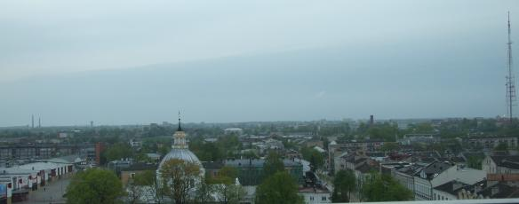
Czas szybko mija podczas jazdy, gdyż czas spędzony z fajnymi ludźmi nigdy się nie dłuży. Tak mówi nasza piosenka „do Cameraty wstąp, tu ludzie fajni są” i to
prawda. Już jesteśmy w Wilnie.
Spotykamy przewodnika i zaczynamy zwiedzać. Najpierw na cmentarz wieleński na Rossie, gdzie razem z matką pochowane jest serce J. Piłsudskiego. Chór oczywiście zaśpiewał przy grobie, złożył kwiaty i zapalił znicz.
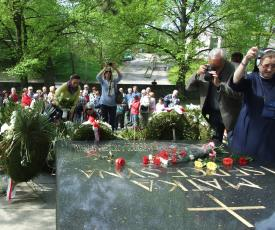 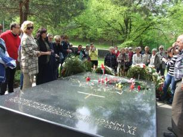
Jedziemy dalej zwiedzać Wilno. Wysiadamy z autokaru i reszta na nogach. Miasto jest piękne. A przewodnik opowiada tak, że można go słuchać, i słuchać, i słuchać.
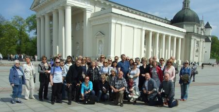
Czasu mało a zwiedzić chcemy dużo, więc trzeba maszerować.
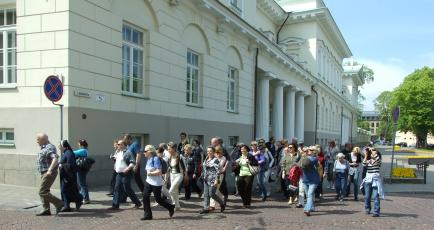
Zwiedzamy również kościoły, czasami coś zaśpiewamy i dalej . . .
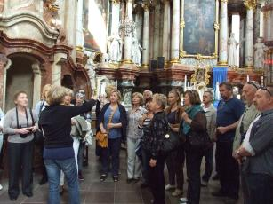 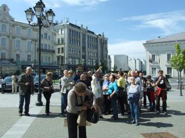
Chwila odpoczynku przy obiedzie i dalej maszerujemy. Tak dotarliśmy do Ostrej Bramy.
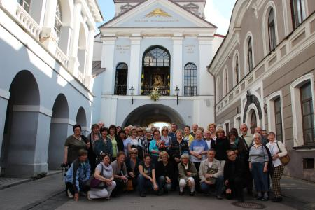
Zaśpiewaliśmy przed cudownym obrazem Matki Boskiej Ostrobramskiej
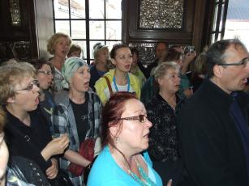 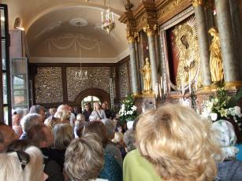
oraz śpiewem uświetniliśmy Mszę Świętą w języku polskim, w Ostrobramskim Kościele Św. Teresy.
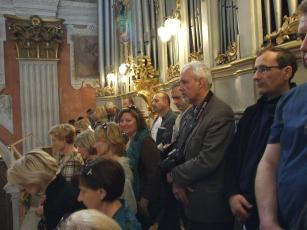 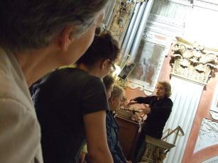
Po mszy krótki koncert organowy dał Zenon Kulik. Była to jego reakcja spontaniczna, gdyż koncert organowy nie był planowany. Kościół wypełniła wspaniała muzyka organowa.
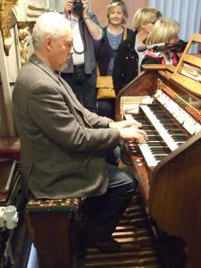
Jedziemy jeszcze zobaczyć panoramę Wilna. Pod trzema krzyżami też śpiewamy i wyjazd do Polski.
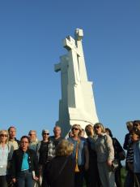 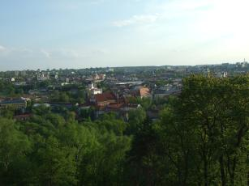
Dzisiaj już śpimy w Suwałkach. Hotel „Hańcza” jak za dawnych lat, wspomnienie PRL-u.

© Stowarzyszenie Muzyczne Chór Camerata Wieliczka